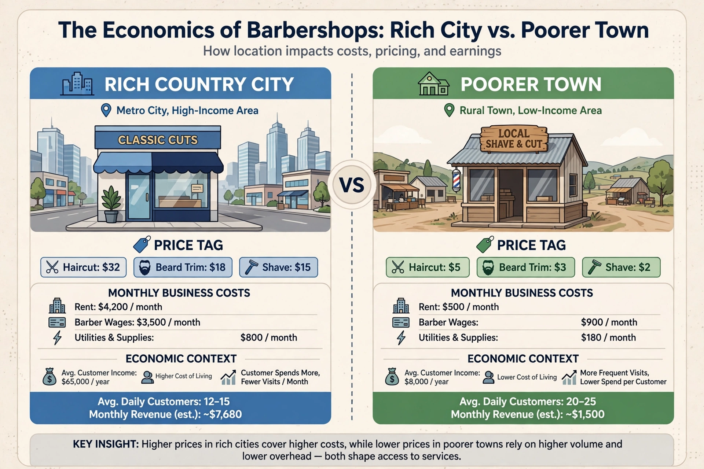

Balassa–Samuelson effect

| Balassa–Samuelson effect | |
|---|---|
| Field | International economics |
| Named after | Béla Balassa; Paul Samuelson |
| Key papers | Balassa (1964); Samuelson (1964) |
| Explains | Systematic differences in price levels between rich and poor countries (Penn effect) |
The Balassa–Samuelson effect, proposed independently by Béla Balassa and Paul Samuelson in 1964, explains why consumer prices are systematically lower in poorer countries than in richer ones when converted at market exchange rates — the empirical regularity known as the Penn effect. It is a core supply-side explanation for deviations from purchasing power parity.
Mechanism
The model divides production into a tradable sector (manufactures and other goods that can be shipped) and a non-tradable sector (most services — haircuts, housing, local transport — that must be consumed where produced). Productivity is much higher in rich countries' tradable sectors, but roughly similar everywhere in services. Because tradable goods prices are set on world markets, high productivity in a rich country's tradables pushes its wages up; since labour is mobile within a country, service-sector wages must rise to match, even though service productivity has not risen. Services therefore become expensive in rich countries, and cheap in poor countries where tradable-sector productivity (and hence wages) are low. The overall price level, an average of tradable and non-tradable prices, is consequently higher in rich countries.
Implications
The effect predicts that fast-growing economies, as their tradable-sector productivity catches up, will experience real exchange-rate appreciation — either through nominal appreciation or through higher inflation than their trading partners. This has been applied to Japan's postwar growth, to the transition economies of Central and Eastern Europe, and to assessments of whether currencies such as the Chinese renminbi are "undervalued": at market rates poor countries' currencies appear undervalued relative to PPP, but much of the gap is the equilibrium phenomenon the Balassa–Samuelson model describes.
Criticism and extensions
Empirical tests generally support the effect over long horizons, though the strength of the relationship varies; critics note that capital flows, demand effects, trade costs, and differences in service-sector productivity also matter. Related formulations include the Harrod–Balassa–Samuelson effect and the Baumol–Bowen cost-disease mechanism for rising relative prices of services.